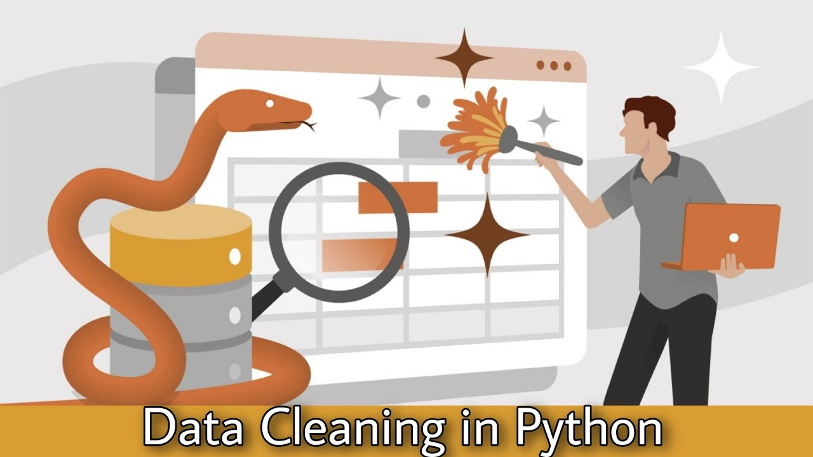
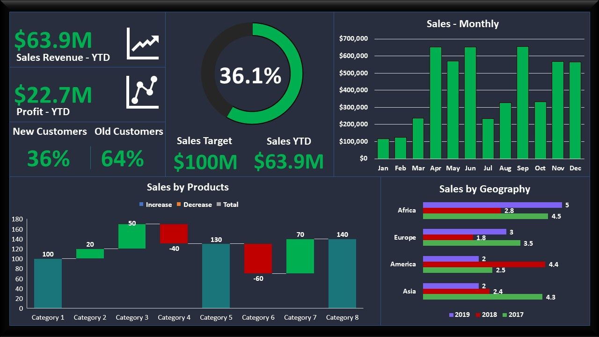

April 10, 2024
In this Portfolio, we documented a comprehensive data cleaning and standardization project undertaken for a dataset pertaining to real estate transactions in Nashville.
The primary objectives of this project were to standardize date formats, populate missing property addresses, break down address fields into individual components,
transform categorical data, remove duplicates, and optimize the dataset by eliminating unused columns. The dataset under consideration contains information about real estate transactions in Nashville.
However, upon initial inspection, it became evident that the dataset suffered from inconsistencies, missing values, and non-standardized formats.
Therefore, a systematic approach was adopted to clean, standardize, and enhance the dataset to improve its usability and reliability. The completion of this data cleaning and standardization project
has significantly improved the quality, consistency, and usability of the real estate transaction dataset.


This project focuses on conducting data exploration and analysis on COVID-19 using SQL queries. It involves querying and analyzing COVID-19 to gain insights into the spread of the virus, total deaths, new cases, vaccinations etc and its impact on different continients and demography.
This Power BI project aims to provide comprehensive insights into Data Professional Survey. The project includes a Average salary by JobTitle,favorite Programming Langauage etc dashboard that visualizes key metrics and trends to support decision-making and strategic planning.

This project showcases proficient data cleaning techniques applied to cricket test match data.
The dataset, underwent meticulous preprocessing steps to ensure accuracy and reliability in subsequent analysis.
This portfolio project not only demonstrates proficiency in data cleaning methodologies but also sets the stage for insightful exploratory data analysis and modeling endeavors.
It underscores the importance of data preprocessing as a critical foundation for robust data-driven insights in the realm of sports analytics.

THIS IS WHERE THE DESCRIPTION OF THE PROJECT SHOULD BE.
THIS IS WHERE THE DESCRIPTION OF THE PROJECT SHOULD BE.

THIS IS WHERE THE DESCRIPTION OF THE PROJECT SHOULD BE.